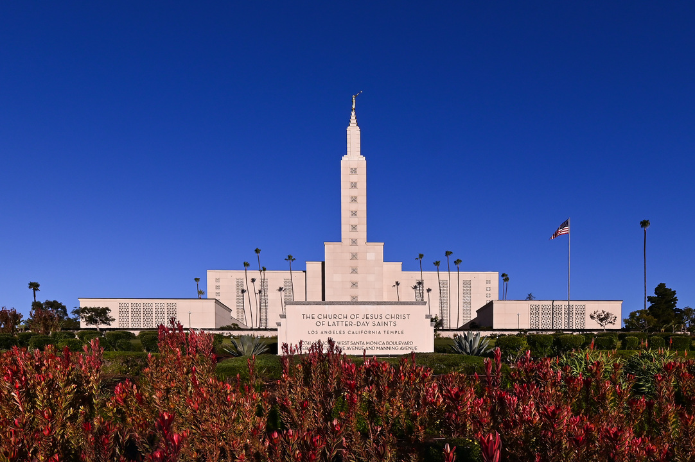

Temple Gallery
☰
Home
Old
New
Large
Small
Home
Nauvoo Temple
Red Cliffs Utah Temple
Salt Lake Temple
Monticello Utah Temple
Kirtland Temple
Payson Utah Temple

Los Angeles California Temple
Colonia Juárez Chihuahua Mexico Temple
St. George Utah Temple